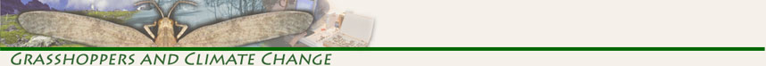

The Alexander Orthoptera Collection specimens are housed in the Entomology Section of the University of Colorado Museum of Natural History in Boulder, Colorado. The collection was identified, curated, and databased with support from the National Science Foundation’s Biological Research Collections program (NSF #0447315).
Specimen records for the collection are now available online through the Global Biodiversity Information Facility (GBIF). You can browse and download the data, including locality and date information, from the University of Colorado Museum of Natural History Entomology Collection (UCM Entomology Collection) dataset on GBIF.
For more information about the collection and additional research tools, see the CU Museum Entomology Databases & Research Tools page.
Note: The earlier interactive search interface relied on a database server that is no longer available. Specimen data are now served and maintained through GBIF at the link above.
For general questions or comments, please email cumuseum@colorado.edu.
©2008 CU Museum, UCB 218, University of Colorado, Boulder, Colorado 80309 tel: (303)492-6892